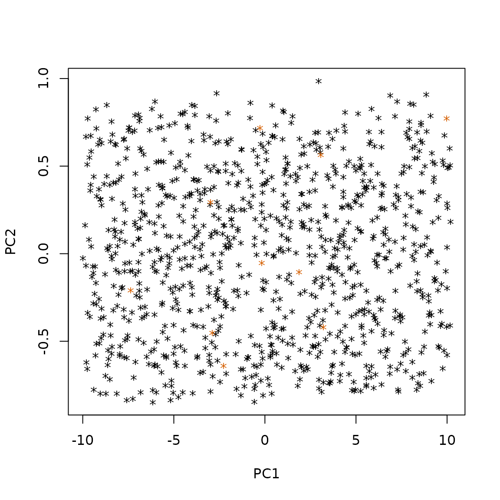

Tutorial
gaussian_laplace.RmdToy Laplace - Gaussian Example
In this tutorial, we use a toy “Laplace - Gaussian” dataset
(gaussian_laplace), that is embedded in the
abcgof package.
We assume that the reference table is drawn using the following model
,
that uses a Laplace distribution:
where the simulated
vectors
has dimension
and is not observed directly, but instead summarized using the first
sample L-moments ratios using function salmu from package
lmom.
The simulated parameters and reference table are stored in the
gaussian_laplace object, along with the simulation
function. The reference table has 1000 rows.
sim_params <- dataset_laplace$param
sumstats <- dataset_laplace$sim
sim_function <- dataset_laplace$sim.fun
head(sim_params)
#> mu scale
#> [1,] -4.9483335 1.3464334
#> [2,] 1.2191817 1.9634809
#> [3,] -0.8857967 1.8678978
#> [4,] 0.7643363 1.9228813
#> [5,] -6.1565456 0.7325722
#> [6,] 2.9305190 1.7523864
head(sumstats)
#> l_1 l_2 t_3 t_4 t_5 t_6
#> [1,] -4.9344853 1.0271073 0.048835212 0.2226024 0.023550314 0.06886227
#> [2,] 1.1850598 1.4876990 -0.025005303 0.2211680 0.006650818 0.09179471
#> [3,] -0.7398060 1.4306265 0.008943995 0.2518546 0.001105052 0.11031211
#> [4,] 0.6918504 1.3695172 0.021150078 0.2022437 -0.011552312 0.05681890
#> [5,] -6.1508125 0.5601383 0.078462189 0.2592043 0.053934372 0.08787851
#> [6,] 2.9109914 1.4306385 0.027822062 0.2590423 0.043137700 0.11603878
#> t_7 t_8 t_9 t_10 t_11 t_12
#> [1,] 0.020564264 0.04687520 0.0024936118 0.01915359 -0.009335724 0.00165149
#> [2,] 0.002258141 0.05415833 -0.0036408789 0.03663786 -0.004957587 0.02893470
#> [3,] 0.010106990 0.04970803 0.0119567379 0.02511239 0.008432557 0.01929786
#> [4,] -0.013831907 0.02429899 0.0009273301 0.02336813 0.005315742 0.02175305
#> [5,] 0.018261429 0.05200649 -0.0024320013 0.03566424 -0.008800341 0.03219378
#> [6,] 0.027837707 0.07015139 0.0123667142 0.04342968 0.012087101 0.03575983
#> t_13 t_14 t_15 t_16 t_17
#> [1,] -2.148276e-03 -0.004010197 -0.0023968345 -0.004706272 -0.003220299
#> [2,] -2.901356e-03 0.019641051 -0.0007584820 0.014332985 -0.003596413
#> [3,] 3.379683e-06 0.015284317 0.0041880260 0.015000429 0.002820463
#> [4,] -2.891049e-03 0.009568189 -0.0049958836 0.011079600 -0.002835480
#> [5,] -1.020638e-02 0.026980234 -0.0087784110 0.020902127 -0.011993138
#> [6,] 7.539844e-03 0.027024252 -0.0002633797 0.016382516 -0.002023180
#> t_18 t_19 t_20
#> [1,] 0.001801288 0.001034639 0.003131637
#> [2,] 0.007500890 -0.005243057 0.007801159
#> [3,] 0.010241943 0.007045583 0.011755243
#> [4,] 0.009010877 -0.009696633 0.005414873
#> [5,] 0.015172543 -0.014516576 0.013414395
#> [6,] 0.014394676 -0.003442754 0.013979047
sim_function
#> function(params, ...) {
#> t(apply(params, 1, function(oneparam) lmom::samlmu(VGAM::rlaplace(350, location = oneparam[1], scale = oneparam[2]), nmom = 20)))
#> }
#> <bytecode: 0x555e1462e1a0>
#> <environment: 0x555e14627550>We then assume that we have several observed vector of statistics, that come from an alternative model that uses a Gaussian model instead: with and as above.
We take as observed values the first 10 line of the
dataset_gaussian dataset.
y_obs <- dataset_gaussian$sim[1:10, ]Note that both models have conditional mean and standard deviations for each raw data , . We can use a PCA to visualize the reference statistics and the observed datasets.
trainall <- rbind(sumstats, y_obs)
ind <- c(rep(1, nrow(sumstats)), rep(2, nrow(y_obs)))
res.pca <- stats::prcomp(trainall)
plot(res.pca$x[, c(1,2)], col = c("black", "#D55E00")[ind], pch = "*")
Points from the reference table are in black, while observed points are in orange. As the Laplace model has heavier tails than the Gaussian model, rejecting the Laplace model with a Gaussian observation can be difficult, which is why we selected this configuration. Visual inspection of the first two PC axis does not reveal that observed orange points would be “outliers” compared to simulated black points.
Pre-Inference Prior GoF Test
We can first perform a Prior Goodness of fit test, based on whole
generated dataset in sumstat. This test checks the null
hypothesis that the observation is drawn from the prior predictive
distribution of model
used to generate the reference table. Rejecting the test means that we
reject the null hypothesis that the data was drawn from the prior
predictive
,
i.e. that model
fails to correctly account for the observation.
resgfit <- gfit(y_obs, sumstats)
resgfit
#> Prior GoF analysis
#> Using the lof with k = max
#> Number of lines in the reference table: 900 ;
#> Number of calibration point: 100 ;
#> Range of k values in the original object: k in [2, 20] ;
#> Number of target observations: 10 ;
#> Table of estimate, lower and upper 95% confidance interval pvalues:
#> estim lwr upr
#> [1,] 0.00 0.0000000 0.0000000
#> [2,] 0.00 0.0000000 0.0000000
#> [3,] 0.00 0.0000000 0.0000000
#> [4,] 0.00 0.0000000 0.0000000
#> [5,] 0.00 0.0000000 0.0000000
#> [6,] 0.07 0.0199921 0.1200079
#> [7,] 0.00 0.0000000 0.0000000
#> [8,] 0.00 0.0000000 0.0000000
#> [9,] 0.00 0.0000000 0.0000000
#> [10,] 0.00 0.0000000 0.0000000
#> Confidence intervals are based on asymptotic standard error estimation.By default, the function sets aside points from the reference table for calibration, and use the remaining points to compute the outlier score. The default outlier score is the “max-LOF” score for k varying between 2 and 20.
Here, we can see that we clearly reject all observation, except for number 6, that has an upper confidence interval value above the threshold. As observations are indeed from a different model than the null model, so this result is expected.
By default, confidence intervals are based on an asymptotic criterion, that is fast to compute, but can be inaccurate. To get a better idea of the uncertainty of the estimation, we can use bootstrap replicates: instead of drawing calibration points only once from the reference table, we repeat this operation a given number of times, and look at the distribution of p-values.
resgfitboot <- gfit(y_obs[6, ], sumstats,
nboot = 10, ## For speed, only 10 replicates, but this should be increased.
ncores = 1) ## The number of cores for parallel computation can be increased.
resgfitboot
#> Prior GoF analysis
#> Using the lof with k = max
#> Number of lines in the reference table: 1000 ;
#> Number of calibration point: 100 ;
#> Range of k values in the original object: k in [2, 20] ;
#> Number of target observations: 1 ;
#> Table of median, lower and upper 95% HPD pvalues on 10 bootstrap replicates:
#> median lwr upr
#> [1,] 0.045 0.01 0.12Here, it confirms the result that observation 6 is not rejected by the prior GoF test. We will further analyze this observation using the post-inference holdout GoF test.
Post-Inference Holdout GoF Test
The prior GoF tests the null hypothesis that the data comes from the prior distribution of model , which is a broad assumption. In a frequentist setting, we might want instead to test whether the true distribution that generated the data is equal to the optimized likelihood of the model, inferred in the region of the observation. This is the goal of the post-inference GoF test. To avoid the double use of the data, we resort to an holdout version of the test: we assume that we have two independent observed datasets, that were drawn from the same (unknown) distribution, and we use the first replicate to learn the posterior, and the second replicate to perform the test.
In our toy example, as we know the true distribution of observation 6, we can easily generate a replicate dataset, by calling the Gaussian simulation function on the same parameters:
y_obs_rep <- dataset_gaussian$sim.fun(dataset_gaussian$param[1:10, ])Here, the posterior is learned with a simple rejection ABC algorithm, by selecting the rows of the reference table that are the closest (for the Euclidean distance) to the first observation, and then by re-simulating points from model using the parameters associated to the selected rows of the reference table.
reshpgfit <- hpgfit(y_obs[6, ], ## observed dataset
y_obs_rep[6, ], ## replicate of the observed dataset
sim_params, sumstats, ## simulated parameters and reference table from m_0
sim.fun = sim_function, ## function to re-simulate from m_0 given parameters
method = "rejection", eps = 0.1) ## rejection method with epsilon = 10%
reshpgfit
#> Holdout Posterior GoF analysis
#> Using the lof with k = max
#> Number of lines in the reference table: 1000 ;
#> Number of lines in the posterior table: 100 (eps=10%);
#> Number of calibration point: 50 (split=50%);
#> Range of k values in the original object: k in [2, 20] ;
#> Number of target observations: 1 ;
#> Table of estimate, lower and upper 95% confidance interval pvalues:
#> estim lwr upr
#> max 0 0 0
#> Confidence intervals are based on asymptotic standard error estimation.Here, the post-inference test does reject the null assumption that the true distribution of the data comes from model . Note that, for the sake of speed in this demonstration, we used a reference table with only particles, localized at . In true applications, for the post-inference test, we should aim at many more simulated particles ( or higher, depending on the complexity of the model), and well better localized ( or lower).
As in the prior GoF test, we can use a bootstrap procedure instead of the asymptotic method to get better estimates of the uncertainty of the estimated p-value. This works by re-sampling the calibration points among the set of selected rows of the reference table.
reshpgfitboot <- hpgfit(y_obs[6, ], ## observed dataset
y_obs_rep[6, ], ## replicate of the observed dataset
sim_params, sumstats, ## simulated parameters and reference table from m_0
sim.fun = sim_function, ## function to re-simulate from m_0 given parameters
method = "rejection", eps = 0.1, ## rejection method with epsilon = 10%
nboot = 50, ## For speed, only 50 replicates, but this should be increased.
ncores = 1) ## The number of cores for parallel computation can be increased.
reshpgfitboot
#> Holdout Posterior GoF analysis
#> Using the lof with k = max
#> Number of lines in the reference table: 1000 ;
#> Number of lines in the posterior table: 100 (eps=10%);
#> Number of calibration point: 50 (split=50%);
#> Range of k values in the original object: k in [2, 20] ;
#> Number of target observations: 1 ;
#> Table of median, lower and upper 95% HPD pvalues on 50 bootstrap replicates:
#> median lwr upr
#> [1,] 0.02 0 0.04The conclusion is similar, although the uncertainty is larger, due to the small number of particles.